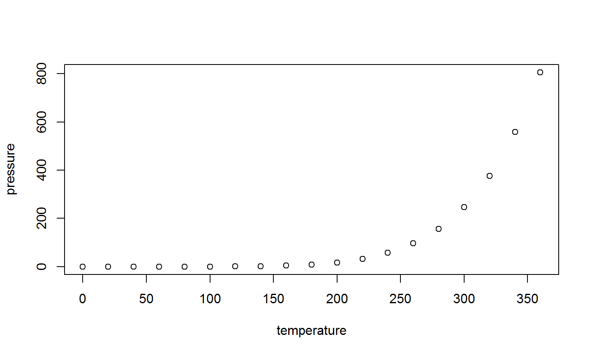

Lets assume I have a footnote.
2017-11-07
Try out some footnotes
The Second Topic
See auto numbering for footnotes.
Testing footnotes
Some text.
Some more text.
R Markdown
This is an R Markdown presentation. Markdown is a simple formatting syntax for authoring HTML, PDF, and MS Word documents. For more details on using R Markdown see http://rmarkdown.rstudio.com.
When you click the Knit knitr https://yihui.name/knitr/
Slide with Bullets
- Bullet 1
- sub bullet 1
- sub bullet 2
Bullet 2
Bullet 3
Slide with R Output
summary(cars)
## speed dist ## Min. : 4.0 Min. : 2.00 ## 1st Qu.:12.0 1st Qu.: 26.00 ## Median :15.0 Median : 36.00 ## Mean :15.4 Mean : 42.98 ## 3rd Qu.:19.0 3rd Qu.: 56.00 ## Max. :25.0 Max. :120.00
Slide with Plot

slide with a quote
Here is a short poem:
Roses are red
violets are blue
The sun is shining happily
and I hope you are too!
Mathjax
Mathjax is supported, so with latex syntax you can get inline \(A = \pi \times r^2 \) or separate maths:
\[ \begin{aligned} I_{1} &= \int_{0}^{2*\pi} \sin(x) \\ I_{2} &= \int_{0}^{2*\pi} \cos(x) \end{aligned} \]
Movies
Check your browser if it supports your file format. I found (on firefox) is that file.mov did not play, but renaming it to file.mp4 worked. mp4/mov seems best cross-browser. Here is an example movie; see tags for controlling autoplay etc.
Output Option
With Rstudio, You can edit various output options with friendly UI.
---
title: "R Markdown Exercise"
author: "Mansun Kuo"
date: "July 24, 2014"
output:
html_document:
css: assets/css/custom.css
fig_caption: no
fig_height: 5
fig_width: 7
highlight: default
keep_md: no
number_sections: no
theme: default
toc: yes
---

Table Output
Set results='asis' to write raw results from R into the output document
knitr::kable```{r, results='asis'} knitr::kable(women) ```xtable::xtable```{r, results='asis'} print(xtable::xtable(women), type="html", include.rownames=FALSE) ```
| height | weight |
|---|---|
| 58 | 115 |
| 59 | 117 |
| 60 | 120 |
| 61 | 123 |
| 62 | 126 |
| 63 | 129 |